CSCI 362 Blog
HW0: Introduction
My name is Joshua Gilley. I'm a Computer Science student at the College of Charleston and a research assistance for CIRDLES. I'm working towards being a full-stack developer. I love surfing in my free time and I've been married for 1 year. I've also got a little boy on the way!
HW1: Chapter 1
-
1.3
4 Most Important Characteristics:Acceptability, Dependability and Security, Efficiency, and Maintainability
4 Other CharacteristicsPerformance, Scalability, Reuseability, and Testability
-
1.8
It is an interesting question when thinking about the code of ethics software engineers are encouraged to learn. There are obvious consequences for trusting your private information with a person or group of people that are not well-equipt to protect it. A lack of certification or license could lead to you trusting them when perhaps you shouldn't have. While this type of formal regulatory body doesn't exist in the software engineering community, there are organizations like the Association for Computing Machinery, the IEEE Computer Society and others. These organizations help better regulate how software engineers are trained when gaining their education which is an efficient means in better making sure that the software engineers going out into the world are better equipt with a fundamental code of ethics they may not have gotten without these organizations.
-
1.9
PUBLIC: Approving software only with the belief that it is safe, meets speciications, has passed appropriate tests and does not damage the quality of life of the general public.
CLIENT AND EMPLOYER: Don't accept work that might be detrimental to the business of the primary employer.
PRODUCT: An example of this would be using the most up to data encryption to store the passwords of new users. You want to use the latest hashing to store passwords, not something like SHA-1. These are the highest professional standards.
JUDGMENT Refuse to participate in any decision of a governmental or professional body, concerned with the software, in which one of their clients have a financial interest. This would not be in the interest of good judgment.
MANAGEMENT Attract employees only by full and accurate description of the conditions of employment. Also, don't ask an employee to do anything in violation of this code of ethics.
PROFESSION: Work with and support those who uphold this code of ethics. Associate with reputable bussinesses and organizations.
COLLEAGUES Be sure to assist colleagues with professional develop and always credit them fully for their work
SELF Further knowledge of developments in analysis, design, development, and testing of software and related documents, together with the management of the developmental process.
-
1.10
On the subject of counter-terrorism, the way in which terror is coordinated comes to mind. Intercepting these coordinations are the way by which law enforcement is able to prevent these terror attempts. This presumably involves, listening in on phone calls, text conversations, emails, etc. Maybe you're looking for keywords or some sort of that pattern that would signal a red flag where law enforcement should investigate further. The result may be less terror happening which is a success. However, what could also become a reality is the corruption of these systems of data collection for unrelated purposes that are not in the interest of the public and have nothing to do with counter-terrorism.
HW2: Reflections on Software Engineering Practices
After reading No Silver Bullet, Cherry Picking, and the Google Code Repo there was a consistent topic being discussed among the articles. The topic seemed to reflect on the best practices, workflows, and common pitfalls of software engineering.
Software engineering is not only growing in practice, but the tools surrounding it are constantly evolving at a point that the individuals in the profession can hardly keep track of the complexity. There are an infinite number of tools and an infinite number of ways to solve a single simple problem. In some cases maybe they’re following tried and true methodologies that help to make their code the best-case scenario, sure. However, I would go out on a limb to say that in the majority of cases, the best-case scenario is not the case. The relationship between development, management and other departments is key in how software is developed in the best way. But in some cases, the relationship itself can cause some of the turmoil in regard to the quality of product that is being put forth. Management has deadlines, budgets, and clients to communicate with where the considerations of the developers are at the mercy of the deadline. When this is the case, maybe the developer forgets to add a few comments describing what a function does or forgets to reuse a component from another project. They are over budget on a project and have to finish it by Friday, so it is what it is.
Although there is no silver bullet, there are paths that we as engineers can take to better the world around us in regard to software, and we have excellent examples of these practices. Google, for example has a single repository containing billions of lines of code. This may sound overwhelming, however, the advantages pinpoint some of the concerns in the aforementioned paragraph. Through this single repository perpetuated with Clients in the Cloud and Piper, they have extensive code sharing and reuse. We as developers are trained to solve problems but we all have a different way of going about it and this can make it difficult to cross-reference the work of one another when we don’t understand the syntax of the latest JavaScript library, for instance. Google has created a one-stop-shop for their developers to refer, refactor and generate solutions to problems that have already been solved. This ecosystem helps push the world of software forward.
Software engineers should not base their work on gut feelings, rather they should use the scientific method. At times it can be difficult to write a concrete mathematical proof to prove that a function works. However, there are steps we can take, such as defining what the problem is and writing it down as a theory. After defining the theory, develop a hypothesis and move toward testing the idea for solving the problem.
“The best way from being stuck in the cherry orchard is to have a merged and tested branch ready to go when it is time for your project to resynchronize with the head of the development tree.” Instilling simple best practice in the community of developers is the path forward in the world of software.
HW3: Chapters 11 & 12
-
11.4
A system prepared to handle software fault tolerance will have both redundant and diverse software and hardware.
-
11.7
Being that N-programming enhances software availability and also the overall quality of the software, it is especially useful for safety-critical systems. Working to treat patients with cancer, it is of utmost importants that the system is safe -- their life could depend on it. I see it as a good suggestion to choose N-version programming when developing a system for cancer treatment.
-
11.9
For a system to have maximum availability, that system must have a very low threshold for failure. When the system is need for use it should be readily available which is why handling all exceptions within the system is so important. If there is a point of failure, find it early through one of the exceptions otherwise make it ready and available to the user.
-
12.5
1.) If the signal status is red, the train should select another track marked green.
2.) If the train goes above the speed limit, the breaks should be applied until the speed of the train matches the speed limit.
3.) If another track is not available when the signal status is red, the train should slow to a stop.
4.) Accelaration of the train should be disabled during the process of slowing to proper speed limit.
5.) If at a complete stop, the train may reaccelarate to the speed limit when a non-red signal status is recieved.
HW4: Reflections on software failures
After looking over the articles for this week's reading, it is clear that the common theme is that of the historical failures of software. From spacecraft accidents, to FBI Fiascos, there are clear indicators and pitfalls that we can identify in these articles so that we can avoid them. But before we get into the specific incidents, why do software projects fail? Well according to an article from entrepreneur.com, the reasons range from poor planning, to insufficient time to complete, to unclear requirements. After reviewing these, I personally can think of numerous examples of situations I've been in where poor planning, and unclear requirements have led to messy rushed code. I can think of situations where there were too many chefs in the kitchen, and the project lacked a clear sense of direction. Insufficient time for a project can lead to a disaster, where you are rushing a product with little care for the structure of course but also very little testing which isn't good.
The Therac-25 has become a standard case study in health informatics and software engineering. It very may well be one of the prime examples as to why N-version programming in cases of vital healthcare software has to be properly funded and thought out. The machine itself was never tested by the AECL until it was already established in the hospital.
Another example would be the CT brain perfusion scans that people were getting pre-2010. Individuals undergoing treatment were receiving extraordinary doses of radiation that were causing awful side effects. "These tests have really high doses, and there’s no system for figuring out who is getting them and why they are getting them.” This sounds like a rushed project with no system of administering radiation in the proper dose to a patient based on what they need. Poor testing, poor documentation, this has all of it.
There is a consistent message across many of these articles where the accidents seem to be caused by a lack of information flow. In the case of the FBI Sentinel project, it was over budget and behind schedule so they were throwing the kitchen sink at the project trying to get it finished only to miscommunicate and have a tool out there where users are losing partially completed forms because their auto-save feature doesn’t work. Or in the case of the space crafts, “all accidents involved one engineering group not getting the information they need from another engineering group.
All of this is do to poor communication which may be caused by poor management. It is important when working on software, where the results are life and death, that the team is tightly integrated. That all members of the project know the requirements of their “component” and that the flow of communication is fluid. Truly these articles point to weak management which is the point of failure for getting a project done correctly, on time, and on budget.
HW5: Chapter 4 and reflections
-
4.5
Gas Pump
The user must enter the correct zip code when using credit card.
The card should be denied if a zip code is not entered within 10 seconds.
The user should be able to see the amount of money they are spending.
The user should be able to see the amount of gas they are receiving in gallons.
If the user has insufficient funds to fill their tank, the gas to slow to a stop at the point their account reaches $0.00.
Bank ATM
The user should enter a pin number to access their account.
The user should specify if they would like to deposit/withdraw cash.
The user should specify how much cash they would like to receive.
If the transaction hasn't had an interaction within 1 minute, the system should restart looking for a PIN.
Internet Banking System
The user should specify the user they want to send to by their account number
The user should specify if they wish to receive or send money
The user should specify how much money they wish to send/receive
The user should select "confirm" if they wish to confirm the send/receive
-
4.6
An engineer might do this by describing the relationship between the function and non-functional requirements. For example, a non-functional requirement might be "Passwords shall never be viewable at the point of entry or at any other time." Well, an engineer might draw a simple t-chart lets say where the non-functional requirement has a list of function solutions that might satisfy the requirement. The function solution for the example given above would be to have the characters password being typed in by the user replace with a "*" instead of the actual character.
-
4.7
1.) The user approaches the machine and inserts card -> the ATM requests the user's PIN number -> the user gives PIN number -> the ATM shows withdraw or deposit -> the user selects withdraw -> the atm shows different options: 10$, 20$, 50$, 100$, Enter an amount… -> The user selects 100$, the ATM dispenses 100$ -> the user grabs the money and drives away
2.) The user approaches the machine and inserts card -> the ATM requests the user's PIN number -> the user gives PIN number -> the ATM shows withdraw or deposit -> the user selects deposit -> the ATM shows "cash" or "check" on the screen -> the User selects check -> the ATM prompts user to insert check -> the user inserts the check and confirms right amount, ends transaction and drives away
3.) The user approaches but does not have a card so no transaction takes place.
4.) The user approaches, inserts card but can't remember PIN in which no transaction takes place.
-
Chapter 4 & Readings
From the readings for the week, the common theme seemed to be the necessity and usefulness of meticulously establishing requirements while also conduction some Test-Driven Development. It is important to establish your function/non-functional requirements pre-development because if you haven't properly done this step, you could get half-way through development without considering a certain use case and have it break in production or worse. As mentioned in the magic number seven article, we have limited cognitive ability when it comes to thinking of all the potential requirements and use cases so it is important that we consider throughout the development process.
HW6: Chapter 2
With an anti-lock braking system the first thing that comes to mind is safety. It is important that the requirements and analysis of what the system is and how it should work should be fully worked out before any implementation is considered. Therefore, a waterfall process model would be most appropriate.
For the virtual reality system I would use an incremental process model. With virtual reality there are changes the creator of the system is going to want to make along the way. It could be that the implementation isn't what you expected it to be or whatever, a more agile form of development is most appropriate.
For the university accounting system it is important to consider that this system has done before. You are going to be reusing components, perhaps that have already been written. You're going to go more of the waterfall route, where once you have established the requirements and libraries you seek to use, the implementation can be put together in one go.
The interactive travel planning system is dealing with some complex form of UI which makes it similar to the virtual reality system. There are changes that the developer is going to want to make throughout, not to mention possibly the client. An incremental approach is best for this.
HW7: Chapter 5 & 6
5.3
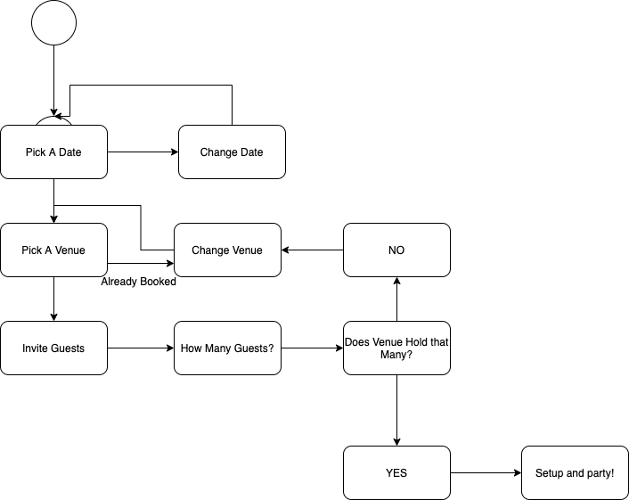5.5
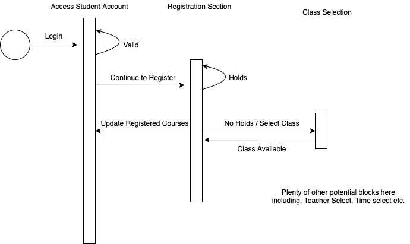5.7
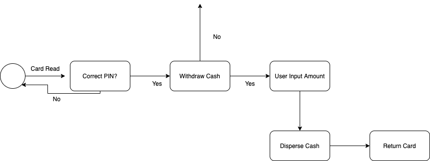5.8
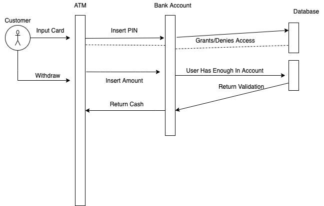6.4
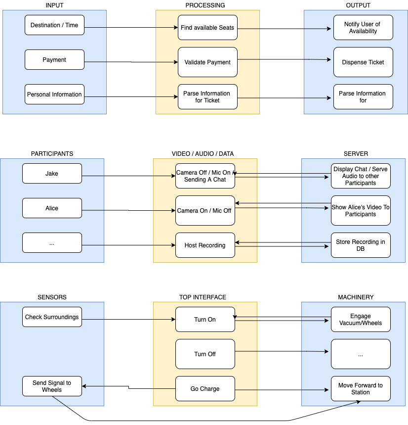HW8: Mythical Man Month
After reading MMM it was clear that the writing was aimed a specific situation where you want to get something done so you figure throwing as many bodies at the project will get it done faster. This however is a myth. Certain projects in software are going to take a fixed amount of time to finish no matter how many people are working on it. In fact, sometimes the more heads working on a project, the more often there is a conflict in creative control and it can take longer to complete. The goal of the book is to make software teams more efficient by having somewhat realistic expectations, having good communication and understanding limitations. The more manpower you add, the quicker a project will get done right?! Not always. This can work for simplistic tasks, but this is not the case with software which is oftentimes lead by deadlines and teams of close communication.
The key is understanding that software is sequential a lot like a pregnancy. No matter how many women you have trying to make a baby, it's still going to take 9 months to produce. The author recommends a specific sequence of how to go about structuring a project where the majority of your time, 1/3 is spent actually planning. In fact, the minimal amount of time is spent writing the code which seems strange. The reasoning is because if you plan properly the amount of time it will take to write the code is minimal because you avoid having to backtrack from hitting a wall.
Communication is the main feature of this book, the more your developers are communicating in the onboarding processing the better. Brooks law is invoked a few times which states that adding manpower to a project can only make it later. The problem with extremely large teams is that if you have n number of people communicating that is n^2 -1 number of potential lines of communication. Whereas if you have two people working there are only two directions the communication can go.
An important aspect of the book seems to be about keeping teams small. Also during the onboarding process, get the developers up to speed quickly by introducing the technologies you use quickly and putting them is small teams. Also it isn't always the best to hire a highly experienced developer for many reasons. They may be more difficult to teach if they have set habits and ways they aren't comfortable getting away from whereas a junior developer can be a little more willing to be molded towards what you want out of a developer. Whether it be the general workflow or the tech stack that you use, a young inspired developer may be more willing to become your ideal developer on the team, with time dedicated to their development.
All in all it was a very interesting read and I can see how books like these are important to read in regards to development operations because by keeping some of these pitfalls in the back of your mind, you can avoid the mistakes of just throwing bodies at a project which could result in a missed deadline, or loss of capital.
HW9: Chapter 8 and reflections on testing
8.7
Ernie as a forecaster for the local weather station in Anchorage, Alaska where it's very cold throughout most of the year. Ernie sits down to access the system with his login and password through the weather station. He seeks to check the forecast for the next two weeks by accessing the future forecast page. He first checks the date at the top of the page to make sure that he isn't looking a previous weeks weather forecast, but instead upcoming forecasts. Understanding that the probability for that forecast may change throughout the week, Ernie has a new report of weather data sent to be printed every few hours or so. Given that new report he maneuvers over to the predicted forecast page to compare how accurate the infomation for future forecasts are. He then updates the social media page with information about the future forecasts. When finished, he then logs off and prepares for his 10 minute segment.
8.10
There is scale for how unethical it is to only test to the limits of the budget based on what the application is. Maybe it's an application for counting the number of water you drank in a day and there are a few bugs from a lack of testing that can be fixed in future updates with more money being allocated to the update. This can be a normal part of the development process. However, if prefection is essential for a piece of software where it must be tested exhaustively, such as anyting in the medical sector, you can't stop testing because of a budget. If this is the case then you shouldn't be shipping out the product until more funding is recieved, or more of you budget needs to be allocated to testing. All-in-all it is unethical to bring testing to a hault based on the budget alone.
Reflections on readings
One of the takeaways from the reading is that modularity does not only apply to the system itself but also to the tests. Tests when broken down into smaller components can be more easily understood the better prevent bugs. Testing should be organized into these components. Also it was pointed out that there are major differences between debugging and testing. Debugging is the process of fixing the bug where as testing is the process of finding bugs and errors. Debugging is but a subprocess of the testing process. The testing plan and process can be developed by "outsiders" of the project whereas debugging is more internal and has to be done by and internal source. This is why it is important to have a strong testing design with multiple inputs of not only the developers and individuals hands on with the system itself, but also people like Ernie who are going to interact with the system everyday. This user-input is valuable to the overall testing process. A strong test plan and design makes for easier modularity for debugging and also less bugs in the first place.
HW10: Chapter 15
15.10
A software contractor is paid to develop the system, but does not have the right to reuse the developed code because it is owned by the contractor. Even though he/she developed the the code they do not have the right to reuse that component. If they would like to obtain the ability to do so they can negotiate that out with the individual or group who purchased the system in the first place. A contractor could even work out a deal with a client where the ability to reuse code involved in the system they developed for you gives you a discount. Something like this where reuse is negotiating. But no, you as the developer are not always the "owner" of the system you built.
HW11: Chapter 9
9.8
Fault repairs to fix bugs and vulnerabilities: These include coding errors which are usually pretty cheap to fix, design errors which are more expensive and involve rewriting many programs. Requirements errors are the most expensive because of the potential redesign to the entire system.
Environmental adaptation to adapt the software to new platforms and environments: This is required when something changes in regards to the environment, say the hardware or the operating system. Application systems may have to change in order to cope with the environmental changes.
Functionality addition to add new features and to support new requirements: This is necessary when requirements change in response to business or organizational changes. The scale of changes to software can be much larger that other types of maintenance.
There are instances such as with the term "Adaptive Maintenance" where the meaning describes adapting to a new environment but it can also mean adapting the software to new requirements. "Perfective maintenance" has the same sort of semantic issues.
9.10
Sofware engineers have a proessional responsibility to develop code that is easily maintained for many reason. The first is to make life easy for the organization or group of developers you are working with. In any case where a developer is no longer working on a project, he/she should consider making life easier on the individuals who are set to work on it either. In some cases, months of work can go in the trash because it is poorly documented and poorly written. This is because the next group doesn't feel like dealing with all of the falacies that could potentially be lurking in the shadows of messy code. Writing code responsibly so that it is easy to maintain should be the base line for any developer.
HW12: Chapter 16
16.9
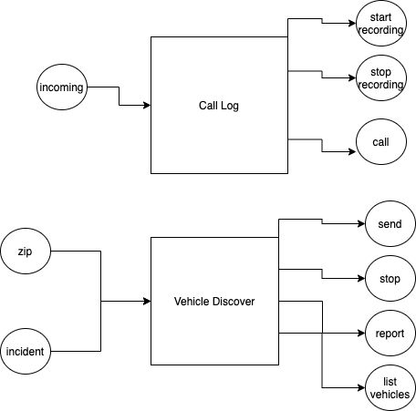HW13: Chapter 17
17.10
Availability
Availability for a desktop application is much better because if a machine goes down the only person dealing with that issue is usally the one with that device. When a server goes down, thousands can be left without that service. So availability can be an issue when switching from Desktop to Web.
Financial
As long as you dont have millions of visitors per day you can usually get away with a small machine handle a large nuber of visitors. ISP's could rent out a maching for around 1,000$ a month and this configuration can workout fine. However, if you're dealing with larger traffic you have to consider what it will cost to implement the service.
Security
Obviously, security is an issue for any web service dealing with sensative information. Vulnerabilities to a web service can be present in many places like the operating system, data base, and the server. This is something to consider when making the switch.
HW14: Chapter 18
--- Currency Converter ---
Operations
compareAmount()parseAmount()
convert()
getDate()
Inputs
InputAmount & ConvertType
InputAmount & DateRange
Outputs
ConvertedAmount & Date
Descriptions
With the input amount and the conversion type, say from the dollar to euros, you get the
amount
in euros. If you also specify a range of dates you can see the value pre/post inflation for
that
date.
--- Check Credit Rating ---
Operations
getInfo()
getCurrentRating()
calculateRating()
getHistory()
Inputs
PersonalInfo
SocialSecurityNumber
GetHistory
Outputs
Successful Account Setup
Credit Rating Response
Previous Reports
Descriptions
With an input of Personal info, you get a response of successful registration or login
With
the social security number you can get an actual credit rating through TransUnion or Equifax
With an input of previous reports (button) you can see your history of previous reports
HW15: Chapter 19
19.3
Emergent properties are the characteristics of a system be it the various components and their performance, safety, security, etc. The emergent properties can capture all the system details of a single component but with a complex system it is more difficult because it depends on the entire system functioning properly. The components must operate as expected in or order to distinguish the emergent properties.
HW16: Chapter 20
20.10
For this one it is pretty easy to see the unethical practice that is changing the price without notifying your user base. Some benefit from this shift, like shareholders, but some obviously lose where they are paying more for a service without notice. The employees working on the tool will speak out against this practice depending on the company they work for. One can imagine a case where the employees don't speak out in fear of losing their job but I think this would be rare in the current social climate. Customers, if they find out, are going to never use the service again more than likely and will speak out against your product decreasing the bottom line even more. Shareholders, again, may reap the benefits in the short term but I would argue that they would be smart enough to see the long term loss when examining the issue further. This is an all-around unethical practice that should never happen. Case closed.
CSCI 399 Blog
Initialization
In contributing to Squid Ink, my first steps were to fork the repository and get it running. The documentation on the repo for squid ink is plentiful but there were some workarounds that I had to figure out in setting up my database. After establishing my cluster in MongoDB Atlas, I need to figure out how to actually post a new user through the /api/users/login url. So after firing up the server on localhost:5000 and the client on localhost:3000 I used postman to post a new user to the database at localhost:5000/api/users/register as shown in the images below.
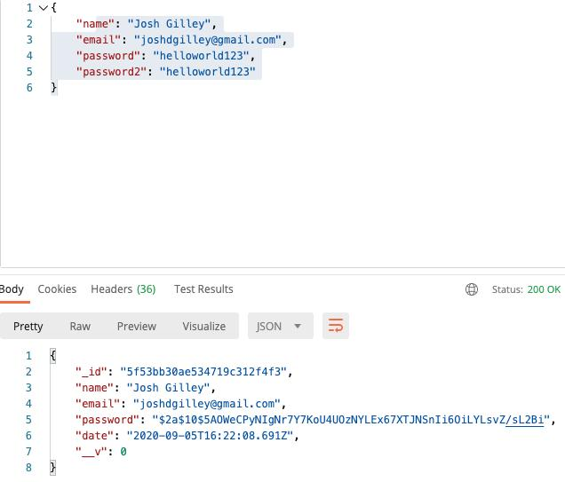As you can see in the lower half, my POST was well recieved. With a new hashed password and an ObjectID, the new user "Josh Gilley" has been stored in the database show below.
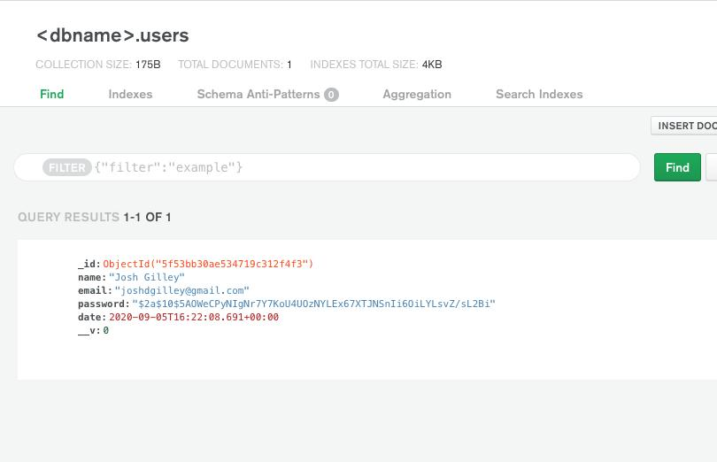After establishing that my connection between the server and database I needed to make sure that I could successfully login using localhost:5000/api/users/login. After doing a POST of name, email, and password the response was a successful login with a 200 header as well as a Bearer token shown below!
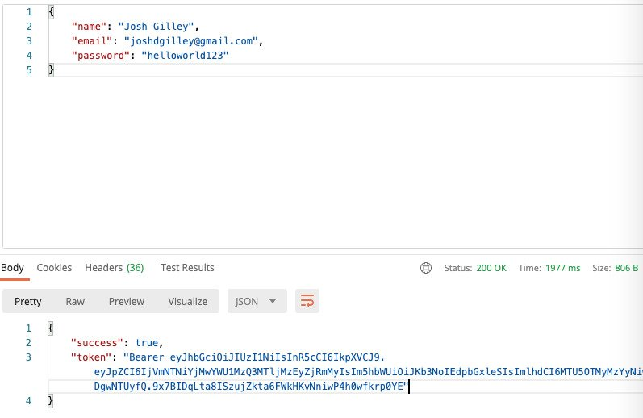And there we have it! I've got the tool running on my machine and I've successfully connected to database. Additionally, I learned that if you don't manually shut down the server and then try the run the tool again you can run into issues being that the current structure is looking for a specific port and if that port is already in use, you'll have issues. So I learned how to shut down that port at the command line. Using the command "sudo kill -9 `sudo lsof -t -i:5000`", the process id is locating for that specific port and then the kill command shuts it down! This can be useful if you left a port open and you want to quickly shut it down.
Next steps are to understand how Docker is being used in the project so we can better establish the bigger picture of what is to be accomplished with Squid Ink.
Upload Files Addition
The big picture for the "Upload Files" Tab is to be able to upload files to the database. The addition I was hoping to make was to actually display the files that you have selected in the UI and to make the Remove button functional in removing particular files from the UI. To accomplish this I needed to go into the Upload.js component and actually establish a state variable to keep track of the selected file's name, size, and obviously its index in the array.
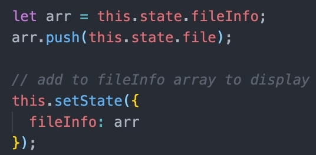After creating this array I created a map for file in the fileInfo array to display that info on the screen. After displaying the file's name and size we needed to add functionality to the remove button which actually removes the file from the array and through that change of state removes it from the UI. This is shown in the screenshot below where you see an addition to the onClick function in the remove button that allows this functionality.
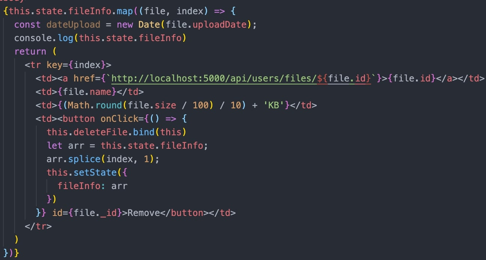Awesome! Everythings working. Now to show it in the browser. Shown in the screenshot below are a sequence of added files shown on the screen. There are some necessary styling fixes to be made along with some clarification as to whether or not we should upload a cluster of "added" files all at once or one by one like they are currently. Also if the remove button should not only remove the files from the UI but also from the database or if this will be a function of the "See My Files" tab.
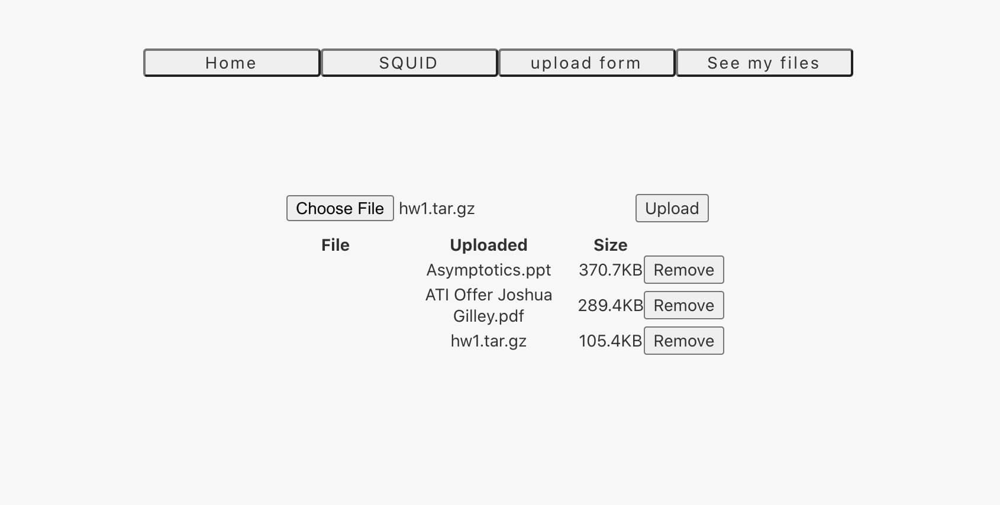Finally, we've also got the remove button working which is shown below. I removed one of the items from the files that I previously added.
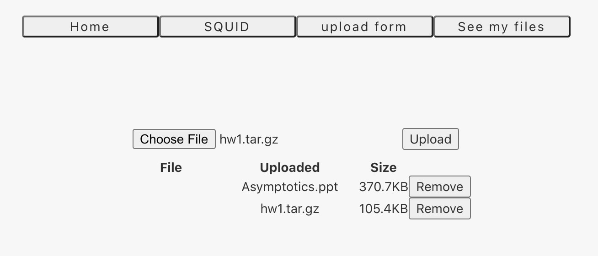I'm still back and forth with the creator of this tool to continue to work out the situation with Docker. On top of that, next steps are to work on the "See My Files" section to actually display the files on the screen that are currently in the database. Also, we want to connect the database ObjectID of the user/password to the specific ObjectID of the files in order to create a connection between user and their files.
Struggling with Docker & REST API
This past week was one of my more difficult experiences. Richard and I work throughout the week trying to understand how we could rethink the dockerization of Squid Ink, or if we could fix the error that was happening when trying to compose. Since we could not figure out how to get rid of this error, we established that since the dockerization of the app is important to establish specific dependencies within certain containers, we can just worry about redockerizing later once we solve some more of the hard issues with the web service.
What seems to be more import is coming up with a way to save the files to the database, but then being able to access the files in the browser under the "see my files" tab. This is something that is done all the time using a REST API. The problem is that we are entering an infrastructure that was built before we were involved, so we are just getting acquainted with the project. The structure for the REST API actually exists so much as the POSTs go. We can use Postman to see that this is actually the case and it is working appropriately. However, when we try to run a GET on the /files page, we run into a particularly tricky error: "this.db.collection is not a function". Richard and I did extensive research trying to discover the cause of the bug, from changing the version 3.0 of MongoDB back to 2.2.33 to deleting and re-installing MongoDB entirely. We are now looking at the code and thinking that the issue has something to do with the line "storage = gfs storage in the server/api/ user.js component because that seems to be the db.collections issue is occuring.
Basically, we are jumping into the project at a point where the previous deveoper was having a hard time figuring it out as well. This may end up being a restucturing of how we actually store and interact with the database so that we don't run into this issue. We may have to work backwards before we can work forwards on this.
Where the problem is now, I created a stack overflow question hoping to address the issue soon. But if I don't here back soon, we may move on to rebuild some of the posting and getting of the files, even though it is partially working.
Success! See My Files Now Functional
This past week we had some good new happen. We got over the hill of the collection.db error and we were able to rework it. By removing the mongoose.connect, and instituting the MongoClient.connect we are able to pass in the client as an argument and call client.db which works for the newer version of MongoDB. The error we were running into before was because the code was operatable for an older version.
Now that we got that running, the second step was to establish the ObjectID for each user, in every file that they post. So if Bud's ID is "123", then "123" will be stored in metadata for each file. We were able to implement this so now with we do the fetch to api/users/files we get a display of json formatted files, relevant to the user that is connected to them.
All in all, we've got See My Files working and now the entire thing is redesigned with Material UI.
Next steps are going to be accessing the list of files in "See My Files" when you are in the Squid container and you want to "Choose Files".
Dockerized Servlet, Feature Flow, and Cirdles Web UI
This past week was spent figuring out how to developer a small servlet that saves a file to a folder. This servlet is displayed in the browser using tomcat and lives inside of a docker container where you can save files. Along with this task was to begin to figure out how the other Cirdles projects are implemented in Cirdles Web UI. While I worked on the dockerized tomcat servlet, Richard spent time understanding how we can go ahead and connect the landing page of Squid Ink into Cirdles Web UI, which is the end goal.
Displayed below is a diagram of what has been accomplished and what the next steps are and how they work together.
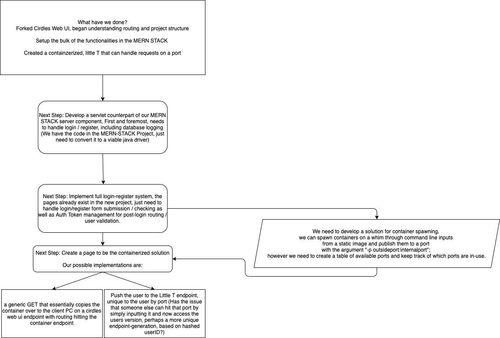The tomcat container where the servlet lives is a placeholder for what will be Squid Ink. All of the different core algorithms and interactive UI will exist within this container. This is a large project, but we have to start somewhere. One of the features of this container is the ability to save and use files within a container. So the first step is to create this functionality with our simple file upload. We accomplished this through first creating our simple file uploader servlet and to export this project with and index.html as a WAR file. Next we wanted to use the dockerized Tomcat container to create an endpoint for the WAR file. Now when you go to the specific endpoint from the Tomcat server, you have access to the file uploader. Now we want to give a new path to the servlet that represents a directory inside the container for the files to be saved. We had success with this, but not only that, we started up the file uploader on 80:8080 and 81:8080 which were two separate containers running on two separate ports. We saved different files in the different containers and bashed into the containers to show that those files were indeed in there. This proves that we can have mutually exlusive sessions happening between users, where every user can have their own unique port to live on while interacting with Squid Ink.
With Richard's implementation of Squid Ink boilerplate in the Cirdles Web UI and my dockerized Tomcat servlet, we have the pieces to this finished web service. Now I want to use the dockerize Tomcat servlet to fire up two separate containers on two seperate ports, upload and save files in the separate containers to show that multiple containers can run. This is another implemental part of the service we are trying to survive.